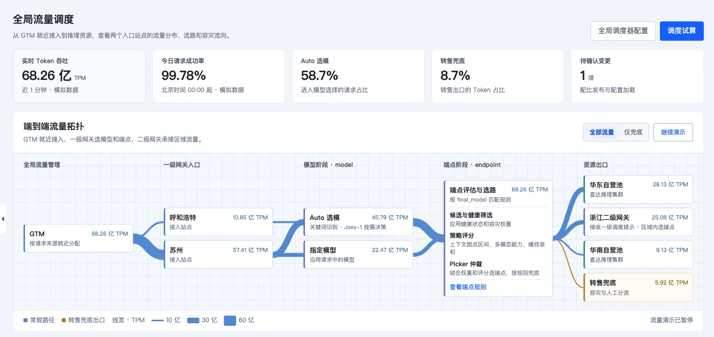

项目
查看 GitHub 仓库Tauri v2 · 桌面工具
One Trade
集成行情、自选、模拟交易、AI 对话与自动化报告的桌面金融工具。
AI 应用
DeepSeek 搜索代理
基于 DeepSeek 的网页搜索代理。
关于
我是 RaspberrySun。这里收录我的公开项目和可以直接体验的在线原型。项目源码、问题反馈和讨论都可以在 GitHub 找到。
GitHub 主页
Tauri v2 · 桌面工具
集成行情、自选、模拟交易、AI 对话与自动化报告的桌面金融工具。
AI 应用
基于 DeepSeek 的网页搜索代理。
我是 RaspberrySun。这里收录我的公开项目和可以直接体验的在线原型。项目源码、问题反馈和讨论都可以在 GitHub 找到。
GitHub 主页